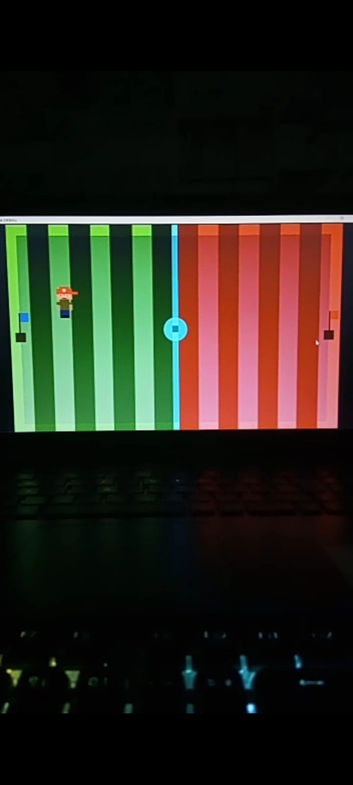

Olá sou um jovem programador que possui um breve conhecimento em HTML e as linguagens de programação C e Java, curso Sistemas de Informação na UFPA (Universidade Federal do Pará) sou formado em computação básica e avançada, hoje em dia participo de um projeto sendo voluntário e não bolsista que aborda o assunto IA (Inteligência Artificial), com o básico de Python onde será ofertado um curso que será disponibilizado em 2023.
Ultimamente tenho como passa tempo o desenvolvimento de games com base na liguagem GD Script que é própria de um progama que se chama Godot que serve para desenvolver tantos jogos 2D quanto 3D que por opnião própria é fascinante por que quanto mais a tecnologia se desenvolve os games também seguem nesta direção. O meu game que penso em continuar no futuro será simples com uma característica 2D com uma arte pixelada, assim dessa forma, com uma chance de buscar e aprimorar os meus conhecimentos.
Imagem( Nome do Game: "Fight of the Flags").
Imagem( Autoria própria).
Imagem( Autoria própria).
Estado: Pará.
Cidade: São Francisco do Pará.
Telefone: +55 91 996014545